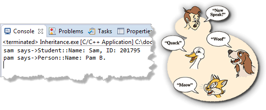

Static Polymorphism
Use make run to see the main program running. This is a kind of "polymorphism", known as static polymorphism. You send the same message to different objects and each responds to the same message according to its nature, just like the duck, dog and cat in the picture.

This is not what we mean when we talk about polymorphism. This would work exactly the same even if Person and Student were completely unrelated classes.
What we mean by polymorphism is an inheritance relationship where the request can be sent to any kind of Person object, and the specialized Person, such as a Student or an Employee responds appropriately.
 This course content is offered under a
CC
Attribution Non-Commercial license. Content in this course
can be considered under this license unless otherwise noted.
This course content is offered under a
CC
Attribution Non-Commercial license. Content in this course
can be considered under this license unless otherwise noted.